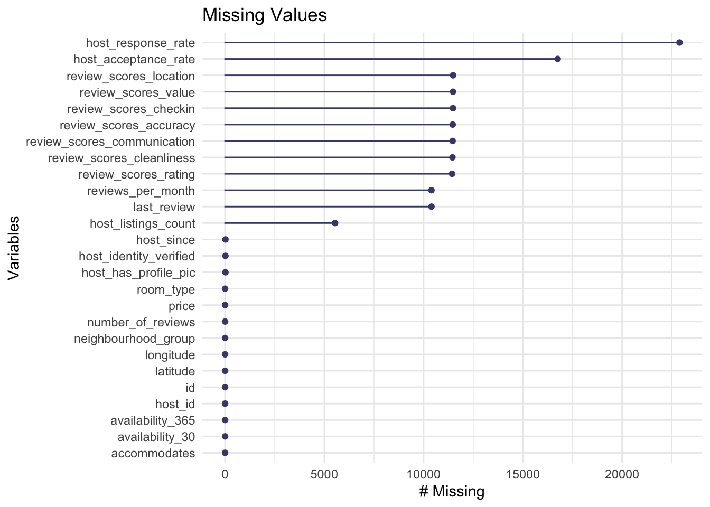

Chapter 4 Missing values
We plot a vis_miss heat graph to investigate the missing patterns in variables that involved in following analysis.

For missing row patterns, we observe that most of the rows don’t have missing values. For missing column patterns, we find that there are 12 columns having missing values. Variable transit has the highest number of missing values, with about 17% of the value missing. Since “transit” is an entry that needs to be manually entered by property owners, we think the laziness of some owners lead to the missing values in transit. Other 7 variables of comments, location_scores(denoted as “locatin_scrs” in the plot), checkin_scores(denoted as “checkin_scrs” in the plot), communication_scores(denoted as “cmmnctn_scrs” in the plot), clean_scores,accuracy_scores(denoted as “accuracy_scrs” in the plot) and review_scores(denoted as “rvw_scores” in the plot) only have missing values in very few rows hence their missing distribution are not reflected in the bar graph on the bottom.
## host_response_rate host_acceptance_rate
## 22892 16754
## review_scores_location review_scores_value
## 11484 11483
## review_scores_checkin review_scores_accuracy
## 11479 11464
## review_scores_communication review_scores_cleanliness
## 11459 11451
## review_scores_rating last_review
## 11432 10394
## reviews_per_month host_listings_count
## 10394 5540
## host_since host_has_profile_pic
## 17 17
## host_identity_verified id
## 17 0
## host_id neighbourhood_group
## 0 0
## latitude longitude
## 0 0
## room_type accommodates
## 0 0
## price availability_30
## 0 0
## availability_365 number_of_reviews
## 0 0